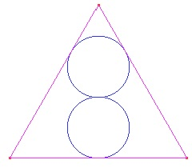
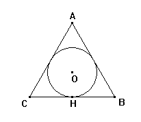
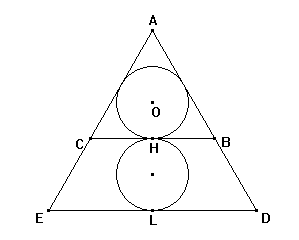
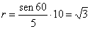

1 Construir la siguiente figura donde el triángulo es equilátero y las dos circunferencias tienen el mismo radio.

Ampliación del editor:
¿Cuanto mide el radio de la circunferencia si el lado del triángulo mide 10 cm?
9na Competencia de Clubes Cabri
Tercera Ronda 7 de noviembre de 1998
Solución del profesor Nicolás Rosillo. Dpto. Matemáticas, IES Máximo Laguna (Santa Cruz de Mudela, Ciudad Real) (16 de febrero de 2003)

A la vista de la figura, y siendo ABC un triángulo equilátero, O es el circuncentro - baricentro – ortocentro, por lo que se cumple:

siendo r el radio de la circunferencia
en el caso pedido por el editor 
La construcción de la figura pasa entonces por dividir la altura del triángulo equilátero en 5 partes iguales. A partir de ahí el proceso es inmediato, y ofrece multitud de variantes gracias a las posibilidades de CABRI.